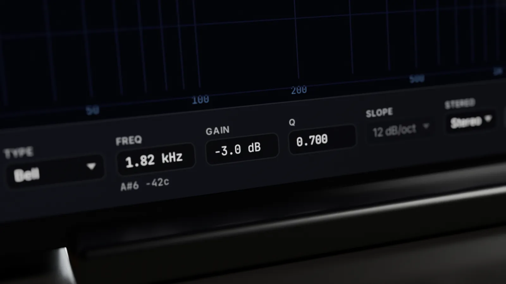
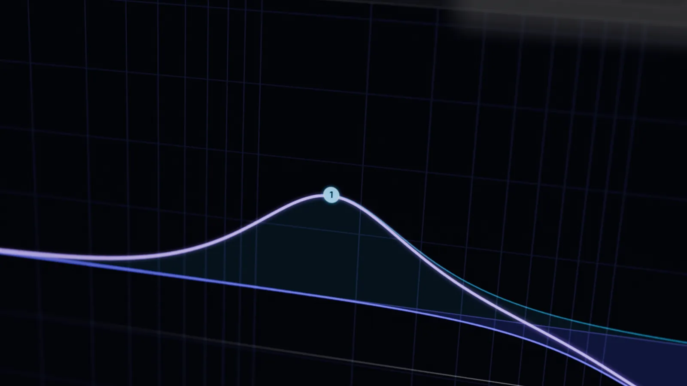
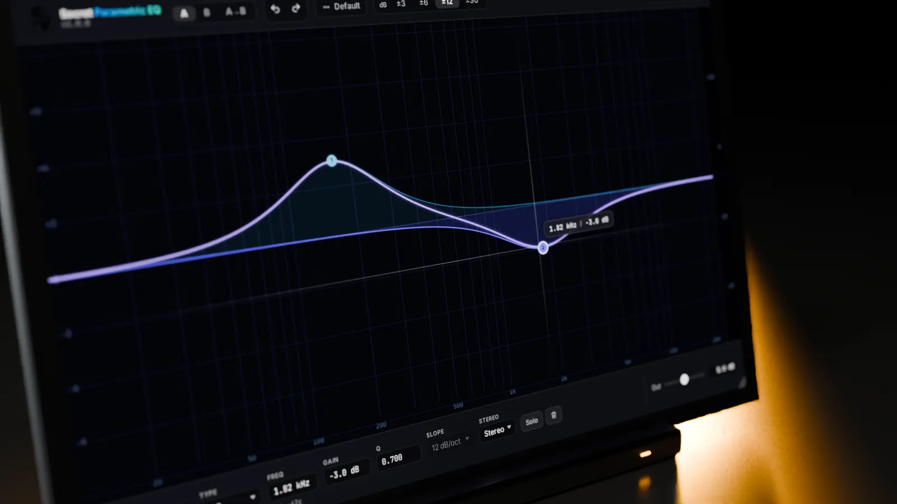

Näher dran.



Was es kann
Bänder zum Ablesen
Typ, Frequenz, Gain, Q, Flanke und Stereo-Modus stehen in einer Zeile unter der Grafik.
A / B und Kopieren
Zwei Einstellungen zum Vergleichen und ein Klick, um A nach B zu kopieren.
Bereich zoomen
Schalte die Grafik zwischen ±3, ±6, ±12 und ±30 dB um.
Noten, nicht nur Hertz
Die Frequenzanzeige zeigt auch die nächste Note.
Details
- StatusIn Entwicklung